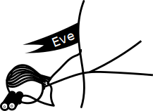

Julian Ceipek, Mar 10, 2014
ElGamal is an asymmetric encryption algorithm used to securely exchange messages over long distances. Unfortunately, if the message being encrypted is short enough, the algorithm is susceptible to a Meet in the Middle attack. In this reactive document, we'll look at how ElGamal works and how to break it in order to steal a fraction of the credit card numbers sent to a hypothetical web store called Alice Inc.
Since this is a reactive document, make sure to experiment with the adjustable values in the examples to make sure you understand them. For example, the factors of %%n=%% are {}.
The objective of encryption algorithms is to help people share secret or sensitive information with one another by using the information equivalent of physical keys. To make the discussion easier to follow, we say that Bob wants to send Alice a message without Eve ever being able to see it. With a symmetric encryption algorithm, the key used to encrypt a message is the same as the key used to decrypt it. This is analogous to Bob putting his message in a box, locking it, and sending it to Alice to unlock. A big problem with this approach is that Alice needs a copy of the key that Bob used. This is a chicken and egg problem: in order to securely exchange information with one another in this way, Alice and Bob must already have exchanged secret information. If Bob ever sends a key to Alice, Eve can easily intercept it and use it to read his messages. In theory, Bob could give Alice a key in person, but that doesn't work well in practice. Imagine having to drive to Amazon's offices in order to give them your credit card number before you could buy something online. Inconceivable!
The solution can be found with asymmetric encryption algorithms, which don't use the same key for encryption and decryption. Continuing our analogy of boxes and physical keys, Alice sends an unlocked lock to everyone who wants to send messages to her. Bob puts his message in a box, locks it with Alice's lock, and sends it back to Alice. Since Alice is the only one with the key to the lock, only she can read the message once it is in the locked box. ElGamal is an example of an information algorithm that works on this principle.
Before we can explore ElGamal, we need to understand some of the principles that are involved.
The %%modulus%% operator is an integral part of many encryption systems. For positive numbers, %%a \bmod b%% computes the remainder after dividing %%a%% by %%b%%, which ensures that the result is between %%0%% and %%b-1%%. Try it out:
%% \bmod %% %% = %%
The aspect of modulo that makes it so useful for encryption algorithms is that the result of %%a \bmod b%% doesn't reveal any information about %%a%%.
The result could just as easily be %% \bmod %% as %% \bmod %% . We say and are congruent modulo :
%% \equiv %% (%% \bmod %% )
Conveniently for cryptography purposes (encryption algorithms deal with very large numbers), the operator distributes over multiplication, addition, and subtraction.
Read more about modular arithmetic on Wikipedia.
A cyclic group is a mathematical group generated by one of the elements in the group, %%g%%. As far as ElGamal is concerned, we are only interested in two types of groups:
If %%p=%% , the factors of %%p-1=%% are {}.
The integer is the smallest generator %%g%% for the full group of order %% n = p-1 = %% containing all the elements from 1 to .
We can produce the sequence { } by raising to successive powers (%% \bmod %% ). This is a finite cyclic group because it wraps around such that %%g^{n} = g^0 = 1%%, %%g^{n+1} = g^1 = g%% and so on.
One of the cyclic subgroups of %%\mathbb{Z}_p^*%% of prime order is { }, generated by .
All the elements of a subgroup can also act as generators. For example, generates the subgroup in a different order: { }.
Read more about cyclic groups on Wikipedia.
Alice wants to enable people to send secret messages to her, so she creates a public key %%(p,g,y)%% that she shares with the world and a private key %%x%% that she never rveals to anyone else. Bob wants to send Alice a secret message, so he uses Alice's public key and a one-time ephemeral key %%k%% to produce the encrypted ciphertext %%(u,v)%%. Here's how it works:
Choose a prime number %%p%%.
Choose an integer %%g%% in %%\mathbb{Z}_p^*%% that generates a cyclic subgroup of %%\mathbb{Z}_p^*%% of order %%n%%.
Choose a private key %%x%% such that %%1 \leq x \leq n-1%%.
Find %%y = g^x \pmod{p}%%.
Publish the public key %%(p,g,y)%%.
Look at Alice's public key %%(p,g,y)%%.
Choose a random integer %%k%% such that %%1 \leq k \leq n-1%%. Note that this means that Bob needs to know %%n%% in order to send a message.
Determine %%m%% such that %%1 \leq m \leq p-1%%. If the full message is too long, split up the message into chunks in order to encrypt them separately.
Compute %%u = g^k \pmod{p}%%.
Compute %%v = m y^k \pmod{p}%%.
Publish the ciphertext %%(u,v)%%.
Look at Bob's ciphertext %%(u,v)%%.
Decrypt the message with %%m = u^{-x} v \pmod{p}%%.
While Alice and Bob have been exchanging secrets, Eve has been feeling left out. In order to make her happy, lets explore one of the ways that Eve can read Bob's messages to Alice: the Meet in the Middle Attack. The Meet in the Middle Attack is very different from the Man in the Middle Attack which involves Eve pretending to be Alice and Bob, reading messages that Bob encrypts with her key instead of Alice's and sending the messages to Alice after encrypting them with Alice's key.
If a number of conditions are met and the message %%m%% Bob sends Alice is short enough, Eve can recover %%m%% if she can intercept %%v%% as Bob sends his ciphertext to Alice. Specifically, the Meet in the Middle Attack only works if
If all the assumptions are met, Eve can proceed as follows:
She knows that
$$y = g^x \pmod{p}$$
and that
%%v = my^k \pmod{p}%%.
Raising both sides to %%n%%,
%%v^n = (m^n)(y^{kn}) \pmod{p}%%.
This is useless as part of an attack if %%m%% is an element of the subgroup generated by %%g%% because then %%m^n = 1%% (since all the elements of a subgroup generate that subgroup, albeit in a different order, and wrap around to %%1%% once they are raised to the order of the subgroup).
If that is not the case, however, remember that %%g^n = g^0 = 1%% because the subgroup generated by %%g%% is cyclic, so
$$ y^{kn} = g^{xkn} = (g^{n})^{xk} = 1^{xk} = 1 $$
which simplifies %%(m^n)(y^{kn})%% substantially:
%%v^n = m^n \pmod{p}%%.
Using the assumption that %%m = (m_1)(m_2)%%,
$$v^n = (m_1^n)(m_2^n) \pmod{p}$$
%%(v^n)(m_2^{-n}) = m_1^n \pmod{p}%%.
To implement the Meet in the Middle Attack, Eve will need to use dictionaries — the computer science ones.
A traditional dictionary is organized so that it is very easy to look up a word to find its definition. The reverse — looking for a definition in order to match it to a word — is really time consuming, especially as the amount of entries in the dictionary grows.
| Word | Definition |
|---|---|
| Dictionary | What this is. |
| Eve | The coolest hacker on the planet. |
| Meet in the Middle | Eve's favorite attack. |
| ... | ... |
A computer science dictionary is very similar, and it can even be used for the same purpose. The only difference is that the element to look up is called a key and the element stored under that key is called a value.
| Key | Value |
|---|---|
| Dictionary | What this is. |
| Eve | The coolest hacker on the planet. |
| Meet in the Middle | Eve's favorite attack. |
| ... | ... |
With the theory out of the way, we can finally help Eve with her attack:
Given that the prime %%p%% has bits,
The public key might be:
( %%p = %% ,
%%g = %% ,
%%y = g^x \pmod{p} = %% )
where the order of the subgroup generated by %%g%% is %%n=%% ,
and the private key might be: %%x = %%
Assuming that %%b = %% bits and that %%b_1 = %% bits meaning that %%b_2=%% bits,
%%m = %%
If the ephemeral key %%k%% is , the ciphertext is:
( %%u = %% ,
%%v = %% )
Since the dictionary only depends on the public key %%(p,g,y)%% and the length of the message %%b%%, we can use it again. Notably, it doesn't depend on the ephemeral key %%k%% in any way.
Using the Meet in the Middle Attack, Eve guesses that %%m = %% .